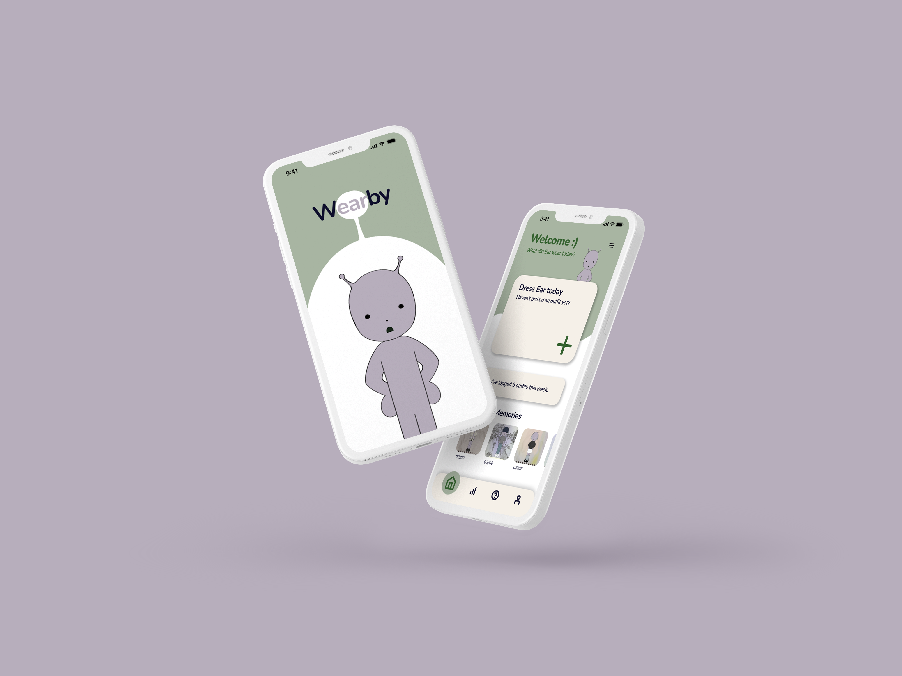
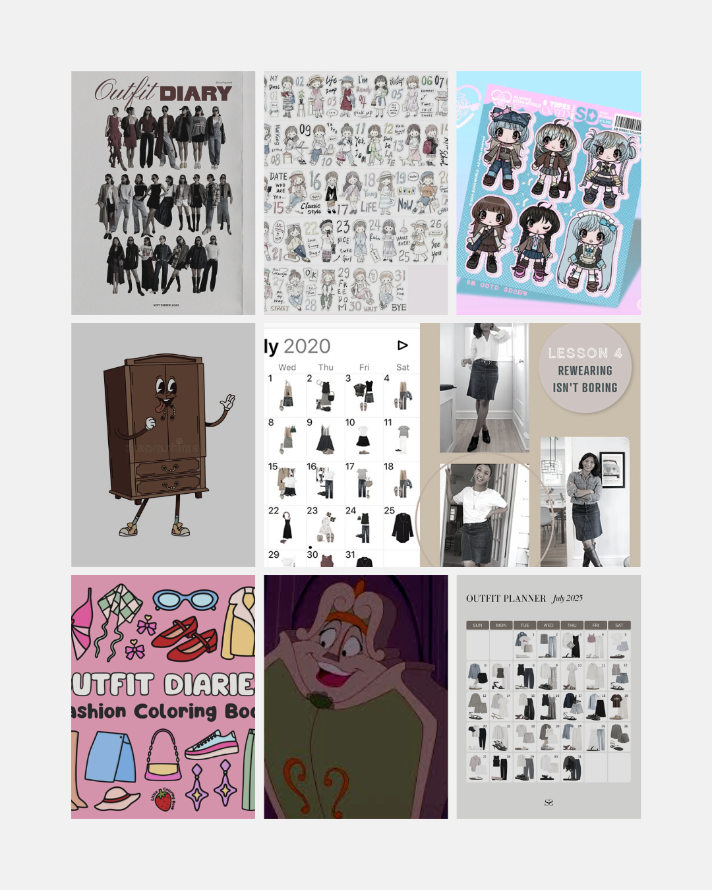
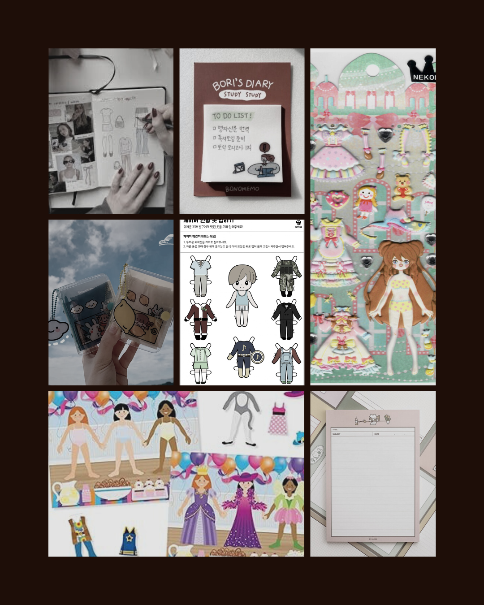
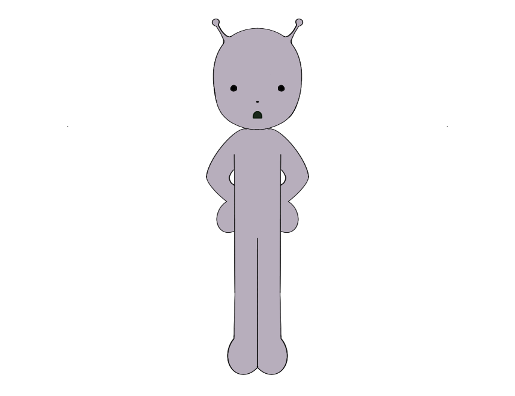
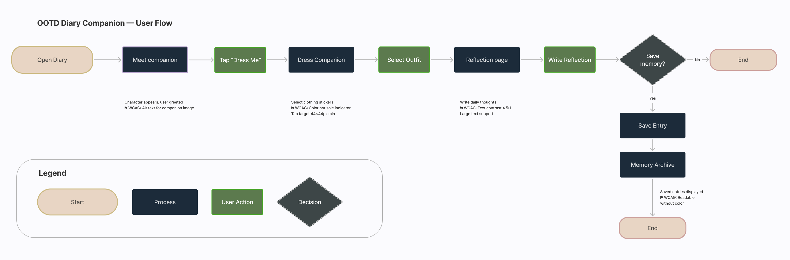
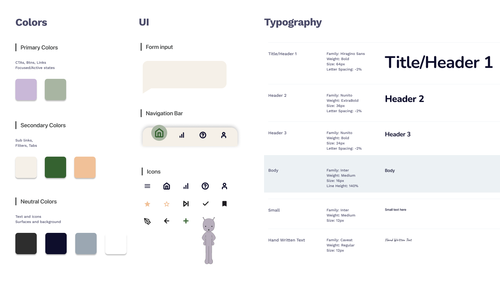
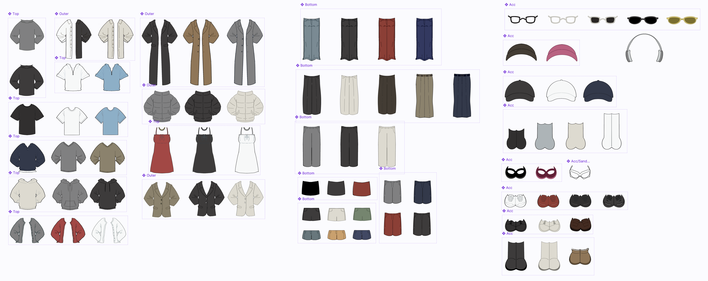
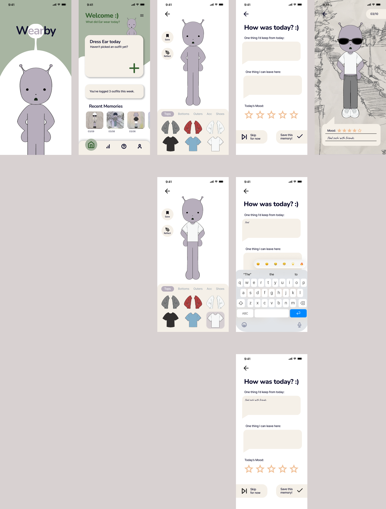

01 Lower Daily Pressure
Play is associated with lower cortisol and helps buffer daily pressure.
American Academy of Pediatrics
A playful OOTD diary companion for daily reflection.

Problem
Daily reflection tools feel serious and effortful. Users who want gentle emotional check-ins have no tool that feels approachable, low-pressure, or fun.
Solution
A companion app where dressing up a character named Ear becomes a daily ritual, turning reflection into play.
Background
This started as a personal project. I wanted a low-pressure alternative to journaling, something with more to respond to than a blank page. I designed and built Wearby solo.
Research
I reviewed published research on play and stress before making any design decisions:
Play is associated with lower cortisol and helps buffer daily pressure.
American Academy of Pediatrics

Adult playfulness supports positive emotion and resilience.
Frontiers in Psychology, 2022

Playful reframing of everyday routines promotes positive affect and stress relief.
Proyer et al., PMC
Research
I researched OOTD diaries, sticker books, and dress-up apps to identify a visual direction that felt playful rather than clinical. Two mood boards converged on four qualities: rounded shapes, an illustration-forward style, a calm palette, and sticker-book tactility, the foundation for every screen and physical asset that followed.


Research
Ear's personality needed to feel safe without being flat. I ran a comparative preference test with 19 participants, showing two directions, Friendly and Humorous, and collecting quantitative picks alongside qualitative feedback.
Before

After
Friendly won on emotional fit. Humorous had fewer picks, but stronger attachment among those who chose it, worth exploring later.
Ideation
A playful character couldn't come at the cost of usability. I ran an accessibility audit against WCAG AA at the wireframe stage, checking contrast, tap targets, and labels, rather than retrofitting it after screens existed.

Ideation
Visual cohesion was a constraint from the start, not a cleanup pass. I built a design system of color and typography tokens plus a reusable component library, every color pairing verified against WCAG AA.

Ideation
Every clothing item needed to work as a swappable variant without breaking visual consistency as outfits were added. I structured each clothing item as a named Figma component using hierarchical slash notation (Category/Type/Color), with color variants grouped into component sets. This gave fast lookup and consistent variant switching across all screens.

Final Solution
Sage green and warm cream carry a calm, non-clinical tone. Ear's presence creates emotional continuity across the flow: Splash, Welcome, Dress Up, Reflection, Confirm Memory.

Final Solution
The digital experience extends into a pocket-sized physical diary: a sealed envelope as the first surprise, 30 daily prompt cards, and an outfit/background sticker system that mirrors the app's dress-up flow. A QR code hidden on the closing page reveals the digital companion as a second, later surprise.
Reflection
Constraints
No one to check my decisions. I had to catch my own mistakes before testing with users.
The app and the physical diary had to feel like one product, but building them used different skills.
Room for Improvement
I tested the character early, but never the full app. I'd test the whole flow next time.
Next Steps
One test session can't show if the habit sticks. I'd want to see if people keep using it after a few weeks.